오늘의 arXiv Top 15
2026-11-02 (월) ·
cs.CV / cs.LG / cs.RO / cs.CL / cs.AI New submissions 전수 평가
cross-list · replacement 제외, 중복 병합 · Top 15은 원문까지 읽고 정리
소급 작성: 자동 실행이 멈췄던 날이라 2026-11-12에 소급 작성함. 이 날 arXiv 공지 목록은 이미 내려가서, 논문 목록을 arXiv API의 첫 제출 시각(마감 14:00 ET 기준)으로 다시 만들었음. 실제 공지 목록과 일부 다를 수 있음(최근 공지 3일로 대조하면 실제 목록의 84~97%가 들어감).
390
신규 논문
73
cs.CV
107
cs.LG
62
cs.RO
44
cs.CL
104
cs.AI
15
정밀 리뷰
1차 스크리닝 390편 (Claude (scheduled agent)) → Top 15 PDF 정밀 리뷰 (Claude (scheduled agent))
분야별 필터
전체 15개 논문 표시 중
1
80점
Contact Imitation Interface: Transferring Dexterous Skills by Showing How Contact Unfolds
Manipulation
relevance 9/10
IEEE 학술지 계열 양식 (추정)
Robotics (cs.RO)
사람 손과 로봇 손에 같은 모양의 손끝 접촉면과 손끝 카메라를 달고, 정책이 관절 대신 접촉면의 이동 궤적을 예측하게 함. LEAP·Wuji 두 로봇 손의 6개 손-과제 조합에서 평균 최종 성공률이 기존 방식의 30.8%에서 80.8%로 오름.
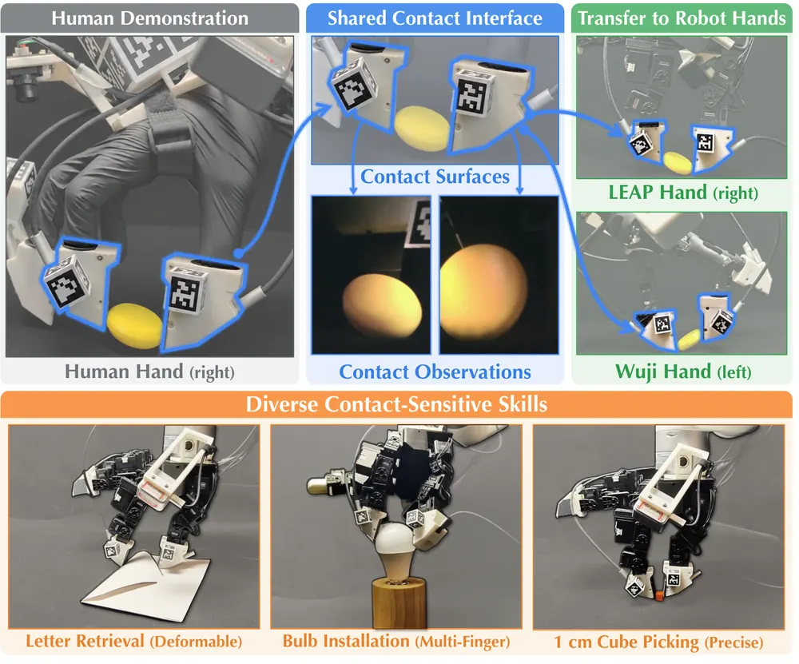
무슨 문제인가
로봇 없이 사람 손으로 dexterous demonstration을 모으려면 사람의 자연스러운 손놀림과 로봇에 옮길 수 있는 데이터를 함께 얻어야 함. 맨손 영상이나 glove는 손놀림이 자유롭지만, 사람과 로봇은 손 구조와 접촉면 모양이 달라 retargeting 뒤 물체와 닿는 순서가 재현되지 않음. teleoperation이나 exoskeleton은 로봇에 맞는 데이터를 주지만 로봇 전용 장비가 필요하고 시연자의 손 움직임을 제한함. 1 cm 큐브 집기처럼 접촉 위치가 몇 mm만 어긋나도 실패하는 과제에서 이 차이가 크게 드러남.
어떻게 푸나
CIMI(Contact Imitation Interface)는 사람 손과 로봇 손가락 끝에 같은 접촉면 모양과 같은 카메라 위치를 가진 손끝 모듈을 붙임. 각 모듈의 contact camera는 손끝과 물체가 닿는 부위를 비추고, 손목과 엄지-검지 사이의 stereo camera(context camera)는 넓은 장면을 찍음. 시연 중 손끝 접촉면의 자세는 AprilTag 표식을 시각 추적해 얻음. 그다음 로봇 접촉면의 네 모서리가 사람 접촉면의 네 모서리에 맞도록 손목과 손가락 관절을 함께 최적화함. 이를 contact-alignment-first retargeting이라 부름. 로봇 손목 자세가 사람과 달라지면 손에 달린 context camera의 시점도 바뀜. 그래서 stereo depth로 만든 point cloud를 로봇 카메라 시점으로 다시 투영하고 로봇 손 렌더링을 겹침. contact camera 영상은 사람과 로봇의 시점이 같으므로 그대로 씀. 정책은 두 단계임: flow-matching planner가 영상과 엄지 기준 접촉면 자세를 입력받아 각 접촉면이 앞으로 16 step 동안 어떻게 움직일지를 예측함. MLP controller가 이 접촉면 궤적과 현재 관절값을 받아 손목 자세와 손가락 관절 명령으로 바꿈.
결과
- LEAP 4개 과제(큐브 집기, 동전 세워 집기, 봉투에서 편지 꺼내기, 전구 끼우기)와 Wuji 2개 과제를 손-과제 조합당 20회씩 평가함. contact camera를 넣은 같은 입력에서 평균 최종 성공률이 손목·관절 명령을 바로 예측하는 DexUMI 방식(WristJoint)의 30.8%에서 80.8%로 오름. 6개 조합 모두에서 올랐고 상승 폭은 20에서 65퍼센트포인트임.
- contact camera를 빼고 context camera만 쓰면 평균 최종 성공률이 WristJoint 0.8%, CIMI 정책 1.7%로 내려감. 큐브·동전·편지 과제는 첫 단계(큐브 정렬, 동전 세우기, 봉투 열기)의 성공률부터 0%임.
- LEAP 동전 과제에서 접촉면 네 모서리를 맞추는 contact-alignment-first retargeting은 모서리 오차가 0.51 mm이고 최종 성공률이 85%임. 손목을 context camera 자세에 고정하는 DexCap 방식(접촉면 중심만 맞춤)은 오차 15.37 mm, 성공률 0%임.
- 같은 사람이 15분 동안 모은 성공 시연 수는 전구 과제에서 CIMI 61개, 맨손 86개, teleoperation 27개임. 동전 과제에서 teleoperation은 성공 시연을 하나도 얻지 못함.
한계
실험은 실제 로봇 손 2종이고, LEAP에서 과제 4개, Wuji에서 그중 큐브·동전 2개만 평가함. action이 위치 궤적뿐이라 힘은 측정하지 않음. 대신 로봇 접촉면에 friction tape를 사람 쪽보다 한 겹 더 붙여, 그 두께가 눌리는 정도로 접촉 하중을 얻음. controller는 손과 제어 손가락 조합마다 따로 학습해야 하고, 사람 손에 추적 표식과 카메라 9개 stream 장비를 달아야 함.
누리랩 연구와의 연결
- 접촉면 궤적을 사람과 로봇 사이의 공통 action 표현으로 쓴 사례임. dexterous manipulation용 cross-embodiment 데이터 수집과 VLA action space 설계에서 관절 공간 대신 쓸 표현의 비교 대상이 됨.
- context camera만 쓰면 물체와 접촉을 만드는 첫 단계부터 실패한다는 결과는 손끝 시각을 tactile perception 대용이나 접촉 실패 감지 신호로 쓰는 failure detection 연구의 근거가 됨.
2
80점
OneSteer: Unlocking Steerable General Humanoid Motion Tracking via One-Step Diffusion Whole-Body Control
RL
relevance 9/10
Robotics (cs.RO)
휴머노이드 motion tracking controller를 한 번의 forward pass로 미래 상태·행동 plan을 만드는 생성 모델로 바꾸고, 가중치를 고정한 채 입력 noise만 task cost의 gradient로 고쳐 새 목표에 맞춤. 시뮬레이션에서 1.25 m 높이 바 아래를 닿지 않고 지나는 비율을 2%에서 90%로 올림.
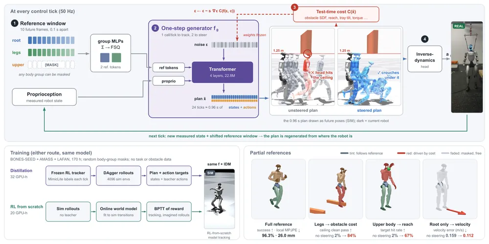
무슨 문제인가
General motion tracking policy는 사람 동작 reference를 그대로 따라 하도록 학습되므로 행동이 reference로 정해짐. 실제 배치에서는 장애물 피하기, 쟁반 수평 유지, 출력이 약해진 모터 같은 요구가 생김. 이런 요구가 생겨도 그에 맞게 고친 전신 reference는 주어지지 않음. 상위 planner로 reference를 고치면 tracker가 고친 동작을 그대로 실행하지 못해 계획과 실행 사이에 차이가 생김. cost guidance를 쓰는 기존 diffusion controller는 goal·keyframe·text를 조건으로 받아서, 전신 reference를 따르면서 일부만 바꾸는 일은 하지 못함.
어떻게 푸나
OneSteer는 50 Hz마다 proprioception과 앞으로 10 frame의 reference window를 입력받으며, reference는 root·legs·upper body 세 body group으로 나뉨. one-step generator(4층 transformer, 22.8M parameter)는 Gaussian noise 입력을 한 번의 forward pass로 약 0.96초 길이의 상태·행동 plan으로 바꿈. 새 목표가 있으면 plan에 대한 미분 가능한 cost(장애물 침투 깊이, 손목과 목표의 거리, 토크 등)의 gradient로 generator 입력만 갱신하고 가중치는 고정함. steering할 때는 generator를 두 번 부르고, 첫 plan에 새 noise를 섞은 두 번째 입력을 고침. inverse-dynamics head는 고친 두 번째 plan의 앞 4개 상태와 현재 feedback으로 관절 명령을 계산함. cost와 충돌하는 body group은 reference를 mask로 가려, 그 부위의 동작은 cost가 정하게 함. 학습은 RL teacher(MimicLite) distillation 또는 world model 기반 RL로 하며, 과제별 demonstration은 쓰지 않음.
결과
- 학습에 없던 사람의 걷기 동작 79개에서 1.25 m 바 아래를 닿지 않고 지나는 비율을 잼. steering 없이 2%, 두 번째 호출에 gradient 2 step을 주면 90%임. 같은 cost로 teacher의 reference를 closed-loop로 고친 방법은 최대 11%임. 고친 reference가 골반을 6.2 cm 낮춰도 teacher는 1.0 cm만 낮추고, OneSteer는 5.9~6.6 cm 낮춤.
- MuJoCo에서 AMASS(사람 motion capture 모음)와 BONES-SEED(일상 동작 데이터셋)의 held-out 구간을 추종함. 성공 clip의 root 기준 관절 오차가 world model 기반 RL로 처음부터 학습한 모델은 26.5 mm와 22.6 mm로 비교한 6개 checkpoint 중 가장 낮음. SONIC 공개 모델은 31.9 mm와 26.8 mm임.
- 실제 Unitree G1에서 동작 9개를 3회씩 27회 넘어짐 없이 수행함. 미리 만든 LiDAR 지도에서 얻은 SDF(signed distance field: 장애물 표면까지의 거리) cost로 1.1 m 바는 5회 중 4회 통과하고, 12 cm 허들은 3회 모두 넘어지지 않고 넘음(닿지 않은 것은 1회). steering 없는 controller는 모든 시도에서 실패함.
- 같은 상태에서 noise만 바꾼 plan들의 관절 위치 퍼짐으로 7,884개 clip의 실패 가능성을 순위 매김(실제 실패율 6.8%). 상위 2% clip 중 90%가 실제 실패임. 이 점수로 고른 329개 clip으로 fine-tuning하면 기존 실패 501개 중 48%가 고쳐지고, 무작위 329개 clip은 27%임.
한계
실로봇 steering은 장애물 2종에 총 8회 시도뿐이며, LiDAR 지도는 실행 전에 만들어 고정했고 steering 계산은 유선 연결된 RTX 4090에서 돌림. 약한 무릎 모터, 쟁반 위 공, 속도 명령 같은 다른 목표는 시뮬레이션에서만 보였고 무릎 고장 생존율은 0.71에서 0.79로 오른 정도임. plan 퍼짐 점수는 전체 순위 AUC가 0.83으로 RL critic 0.86, imagined rollout 0.91보다 낮고, 저자도 보정된 실패 확률이 아니라고 밝힘.
누리랩 연구와의 연결
- frozen 생성 policy의 입력 noise를 task cost로 50 Hz 안에서 최적화한 사례로, VLA의 diffusion·flow action head에 test-time cost를 거는 연구의 직접 비교 대상임. reference 편집보다 나은 이유가 executor가 자기 plan을 따르도록 학습된 데 있다는 분석은 planner와 controller를 나눌지 정할 때 근거가 됨.
- 같은 상태에서 noise만 바꾼 plan의 퍼짐으로 실패할 동작을 시뮬레이션 없이 고르는 방법은, diffusion policy 기반 manipulation의 failure detection 신호로 옮겨 시험해 볼 수 있음.
3
78점
CaPtain: A Pipeline for Post-Training Code-as-Policy Robot Agents
Manipulation
relevance 9/10
Meta 자체 양식
Robotics (cs.RO)
작은 오픈 VLM이 저수준 로봇 API로 코드를 써서 조작하도록 SFT 후 multi-turn RL로 학습하는 파이프라인 CaPtain을 제시함. Qwen3.5-4B의 held-out LIBERO 성공률을 0%에서 SFT 후 55.4%, RL 후 73.8%로 올림.
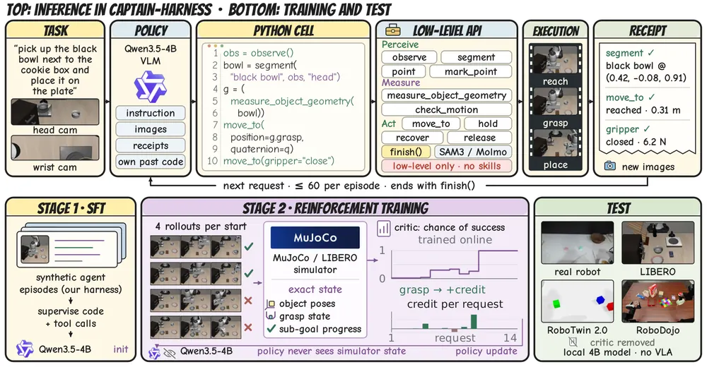
무슨 문제인가
Code-as-policy(CaP) agent는 카메라 이미지를 보고 로봇 API를 호출하는 코드를 써서 조작하는 방식임. 기존 CaP agent는 매 episode마다 비용이 드는 closed frontier model을 그대로 부름. 다른 갈래는 grasp·place 같은 skill이나 사전학습된 VLA에 실제 조작을 맡김. 후자는 코드가 어떤 skill을 부를지만 정하므로 RL로 순서만 배울 수 있고, skill이 학습된 데이터 범위를 넘지 못함. 작은 오픈 VLM은 직접 로봇을 다루면 거의 실패하며, Qwen3.5-4B는 저자 harness에서 LIBERO episode를 하나도 풀지 못함.
어떻게 푸나
CaPtain은 먼저 CaPtain-Harness라는 실행 환경을 정의함. 이 harness는 segment·point 같은 인식, 물체 기하 측정, end-effector 자세를 직접 받는 guarded motion 등 저수준 기능 22개만 제공하고 grasp skill이나 VLA는 두지 않음. policy는 한 번의 모델 호출 단위인 request마다 지시문, 이미지, 이전 코드 결과를 입력받아 reasoning과 Python 코드를 출력함. harness는 실제로 일어난 일(정지 이유, 이동 거리, 접촉력 등)을 text receipt로 돌려줌. 1단계에서는 GPT-6 Astra로 harness 안에서 만든 합성 궤적으로 SFT를 함. 2단계 multi-turn RL에서는 simulator critic이 policy가 보지 못하는 시뮬레이터 상태(물체 자세, grasp 여부, sub-goal 진행 등 36개 특징)로 성공 확률을 예측함. 각 request의 credit은 그 request 전후 예측 성공 확률의 차이임. critic은 물리 상태만 보고 전후를 같은 시간 index에서 비교하므로, 물리 상태를 바꾸지 않는 인식·확인 request는 credit이 거의 0이 됨. critic은 학습에만 쓰고, test 시 policy는 카메라 이미지와 receipt만 봄.
결과
- LIBERO(Panda 팔 시뮬레이션 조작 과제 40개 모음)의 held-out 초기 상태 240개에서 host 성공률(최종 상태가 benchmark의 목표 조건을 만족한 비율)이 SFT 후 55.4%에서 RL 후 73.8%로 오름. 학습에 쓰지 않은 perturbation을 넣은 LIBERO-PRO, LIBERO-Plus, LIBERO-MAX에서도 RL 향상폭이 17.6~21.2퍼센트포인트로 유지됨.
- LIBERO-PRO 중 짧은 과제 3개 suite의 평균 성공률은 78.5%로, frontier model을 쓰는 K1 77.2%, WAA 75.6%, ASPIRE 71.7%보다 높음. Claude Opus 5를 쓰는 OpenRUA 91.8%보다는 낮음. 저자 추정 episode당 비용은 0.03~0.06달러이고 OpenRUA는 8~22달러로 보고됨.
- LIBERO-PRO 4개 suite 전체 평균에서는 RL 향상폭이 19.4퍼센트포인트(49.2%에서 68.6%)임. frozen VLA 위에서 planner를 RL로 학습한 AgenticRoboRL은 5.9퍼센트포인트임. 두 방법의 출발 성능은 다름.
- LIBERO만으로 학습하고 추가 학습 없이 SimplerEnv WidowX 4개 과제에서 83.3%를 기록함. CaP-Bench(code-as-policy agent 평가 모음)의 Cube Lift·Cube Stack 과제에서는 표준 step 제한 아래 점수 75.0을 받음. 실로봇(Astrabot XR1)은 단순한 twin 시뮬레이션으로만 적응시킨 뒤 2개 과제 성공 사례를 보임.
한계
RL은 LIBERO 40개 과제와 단일 팔에서만 했고, 양팔 과제로 옮기면 RoboTwin 2.0 22.6%, RoboDojo 0.8%로 낮음. critic은 정확한 시뮬레이터 상태에 기댐. 물체 자세에 2cm noise만 넣어도 critic이 매긴 credit과 정확한 상태로 구한 credit의 상관이 0.49로 내려가며, 실로봇 위 RL은 보이지 않음. 실로봇 결과는 정량 성공률 없이 episode 2개 사례뿐이고, 닦기처럼 지속적 힘 제어가 필요한 과제는 primitive로 표현할 수 없음.
누리랩 연구와의 연결
- 저수준 primitive 위에서 grasp·place 결정까지 policy가 직접 내리게 하고 RL로 고치는 구조라, VLA와 다른 경로의 manipulation policy 비교 대상으로 쓸 수 있음. receipt로 실패 원인(정지 이유, 접촉력)을 돌려받아 다음 코드에서 다시 시도하는 구조는 failure detection·recovery 연구와 바로 이어짐.
- 시뮬레이터의 privileged state로 request마다 성공 확률 변화를 credit으로 주는 방식은, long-horizon 과제에서 어느 행동이 결과를 만들었는지 따지는 counterfactual credit 연구의 출발점이 됨.
4
78점
When the Simulator Fails, Not the Policy: Auditing Contact Artifacts in Simulated Robot Benchmarks
Manipulation
relevance 9/10
ICLR 양식 (추정)
Robotics (cs.RO)
시뮬레이션 benchmark에서 policy가 물체를 제대로 놓았는데 physics engine이 튕겨 내어 실패로 기록되는 episode를 찾고, 원인을 PhysX 5.3.1 충돌 검사의 상수 하나로 좁힘. 그 상수만 고치면 RoboTwin 2.0 container 과제 5개에서 LingBot-VA의 closed loop 성공률이 89%에서 98%로 오름.
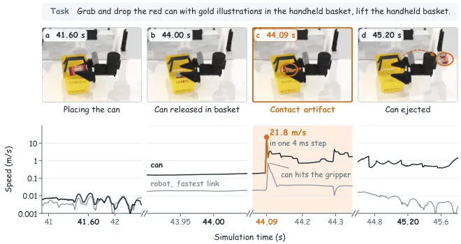
무슨 문제인가
시뮬레이션 benchmark는 episode마다 성공 여부만 기록하므로 실패가 policy 탓인지 simulator 탓인지 가리지 못함. 예를 들어 world action model인 LingBot-VA가 캔을 바구니에 넣고 놓은 뒤, 로봇이 거의 멈춘 상태에서 캔이 바구니 밖으로 날아감. 이때 캔 속도는 한 physics step(4 ms) 만에 0.2 m/s에서 22 m/s로 오름. 이 충격은 카메라 프레임 두 장 사이의 한 step에만 생기므로 영상을 봐도 무엇이 캔을 밀었는지 알 수 없음. 기존 연구는 success rate에 지표를 더하거나 engine끼리 비교했을 뿐, rollout 안의 이상 접촉 하나를 그 episode의 결과까지 이어 추적하지는 않았음.
어떻게 푸나
SimuGuard는 benchmark의 평가 스크립트를 그대로 두고 physics step 함수만 감싸는 감사(auditing) plugin이며, LIBERO, RoboTwin, RoboCasa, RoboDojo용 adapter를 제공함. 매 step마다 actuation, 모든 물체의 pose와 속도, 물체 쌍별 접촉 impulse와 관통 깊이를 기록함. 기록에서 contact artifact(로봇 접촉이나 중력으로 설명되지 않는 속도로 접촉 지점에서 움직이기 시작한 물체)를 속도 비교 3단계로 찾음. 1단계는 접촉 직후 급가속한 물체를 후보로 잡음. 2단계는 낙하 높이로 설명되는 속도를, 3단계는 로봇이 다른 물체를 통해 밀어 생긴 속도를 걸러 냄. 그다음 seed로 장면을 다시 만들고 기록된 actuation을 첫 step부터 넣어 bit 단위로 같은 episode를 재현함. rerun은 이 재현에서 물체 질량, solver 반복 수, depenetration 속도 제한, engine 상수 같은 parameter 하나만 바꾸고 benchmark 자체의 성공 판정으로 다시 채점함.
결과
- RoboTwin 2.0(SAPIEN과 PhysX 위의 양팔 조작 benchmark)에서 원인을 추적한 거짓 접촉 20개를 simulator 밖에서 기록된 pose만으로 숫자까지 똑같이 재현함. 거짓 접촉은 engine이 서로 닿지 않은 두 충돌 조각 사이에 관통을 보고한 경우임. 원인은 GJK(충돌 조각 사이 거리를 구하는 알고리즘)가 넓이 제곱 2^-23 이하의 삼각형을 퇴화로 버리는 고정 임계값임. 1~2 cm 크기의 convex 조각에서는 정상 삼각형도 이 값 아래로 내려감. 이 임계값만 PhysX 5.4.0 값으로 바꾸면 거짓 접촉 20개가 모두 사라지고 실제 관통 4개는 깊이를 유지함.
- benchmark 공식 평가 스크립트를 그대로 돌린 감사 run(LingBot-VA의 5개 과제 성공률 83.1%)을 봄. 얇은 벽 container에 물체를 넣는 과제 5개에서 LingBot-VA 실패 44개 중 40개, HyVLA(VLA) 실패 10개 중 6개에 artifact가 있음. 정답 pose로 움직이는 benchmark 자체의 scripted demonstration도 60 seed 중 artifact episode가 Place Can Basket 18개, Stack Bowls Three 6개였고, 임계값 수정 후 각각 1개와 0개로 줄어듦.
- 감사 run과 별도로, 같은 5개 과제를 과제당 20 seed로 새로 돌린 closed loop 평가 100 episode에서 engine을 비교함. 이 평가에서 LingBot-VA 성공 수가 89에서 98로 오르고, artifact가 있는 episode는 12에서 0으로 줄어듦. HyVLA는 성공 90에서 94, artifact 10에서 1로 바뀜.
- engine을 바꿀 수 없을 때를 위해 flag된 episode가 모두 실패하거나 모두 성공한다고 둔 성공률 범위를 냄. LingBot-VA의 감사 run에서 그대로 잰 성공률 83.1%에 대해 범위는 75.8%에서 98.5%임. depenetration 속도 제한을 rollout 내내 켜는 우회책은 Place Object Basket 성공률을 90.0%에서 50.0%로 낮추므로 수리 방법이 되지 못함.
한계
수리한 engine의 closed loop 측정은 policy 2개, 과제 5개, 과제당 20 seed뿐이고, LingBot-VA의 성공 수 차이는 단독으로 유의하지 않음(sign test p=0.11). PhysX 5.3.1 안의 상수 하나만 바꿨을 뿐 RoboTwin 전체를 PhysX 5.4.0 이후 버전으로 바꿔 돌려 보지는 않았음. RoboDojo(Isaac Sim, GPU 접촉 계산)에서 본 거짓 접촉의 원인은 찾지 못했고, MuJoCo 기반 LIBERO와 RoboCasa는 작은 규모로만 감사함. detector precision 0.925도 한 과제에서만 잰 값임.
누리랩 연구와의 연결
- 시뮬레이션 실패 rollout을 failure detection과 recovery 학습 데이터로 쓸 때, policy 실패와 simulator 실패를 가르는 필터로 바로 쓸 수 있음. 특히 RoboTwin이나 SAPIEN(PhysX 5.3.1 이하)에서 얇은 벽 container 과제 수치를 비교할 때 점검 대상임.
- 매 step 기록, bit 단위 재현, parameter 하나만 바꾼 rerun으로 결과의 원인을 가리는 구조는 counterfactual reasoning 실험 틀로 그대로 가져다 쓸 수 있음.
5
74점
VLA Policies Do Not Know When Not to Act: Unintended Task Execution and Start Suppression
VLA
relevance 9/10
IEEE 학술지 계열 양식 (추정)
Robotics (cs.RO)
VLA policy에 지시를 비우거나 의미 없는 문장을 주고, 같은 초기 상태에서 로봇이 출발하는지와 어떤 과제를 완료하는지를 따로 측정함. LIBERO-Goal에서 6개 checkpoint 모두 빈 지시에 매 episode 움직였고, 그중 5개는 지시하지 않은 과제를 30.5~94.0%의 episode에서 완료함.
무슨 문제인가
언어 조건 behavior cloning은 모든 학습 입력을 시연 행동과 짝지으므로 학습 데이터에 가만히 있으라는 샘플이 없음. 그래서 음성 인식 누락, 옆 대화에서 들어온 문장, 장면에 없는 물체를 가리키는 요청을 받았을 때 policy가 무엇을 할지 정해져 있지 않음. 표준 평가는 지시된 과제의 성공률만 재므로, 다른 과제를 완료한 경우와 가만히 있은 경우를 구분하지 못함. 선행 연구는 빈 지시에서 policy가 기본 과제 하나를 수행함을 보였지만, policy가 아예 출발하지 않는 비율과 출발을 막는 방법은 재지 않았음.
어떻게 푸나
LIBERO-Goal(한 부엌 배치에서 서랍 열기, 그릇 옮기기, 스토브 켜기 등 과제 10개를 수행하는 시뮬레이션 모음)의 초기 상태 200개와 seed를 고정하고 지시 문자열만 바꿔 episode끼리 짝지어 비교함. 지시 조건은 원래 지시, 같은 장면의 다른 과제 지시, 빈 문자열, "do something", "xxx", 없는 물체를 가리키는 문장, 불가능한 행동 문장 등임. 매 step마다 10개 과제의 goal predicate를 모두 검사하고, episode를 완료, 접촉만 있는 시도, 접촉 없는 움직임, non-start로 나눔. non-start는 완료와 접촉이 없고 end effector 최대 이동이 5 cm 미만인 경우이며, 출발 억제(start suppression)는 이 비율로 판정함. 억제 방법은 세 가지를 비교함. prefix는 지시 앞에 "if no task is given do not move"를 붙임. gate는 첫 호출에서 주어진 지시와 빈 지시의 action chunk 거리를 잼. 이 거리가 같은 지시에서 seed만 바꿨을 때 생기는 거리의 95번째 백분위수 이하이면 episode 내내 팔을 멈춤. 비과제 입력은 빈 문자열, "do something", "xxx"처럼 과제 문장의 형태가 아닌 지시를 말함. no-action fine-tuning은 GR00T N1.7 학습 샘플의 15%를 비과제 입력과 정지 target으로 바꾸며, 학습 seed 3개로 수행함.
결과
- 빈 지시에서 non-start 비율은 6개 checkpoint(GR00T N1.7 두 종, π0.5, SmolVLA, Fast-WAM, Evo-1) 모두 0.0%임. SmolVLA를 뺀 5개에서 어떤 과제든 완료한 비율은 Fast-WAM 30.5%에서 π0.5 94.0%까지였음. 그 초기 상태가 원래 속한 과제의 성공률은 2.5~9.0%였음. SmolVLA는 완료가 2.5%였지만 200개 중 198개 episode에서 스토브에 먼저 닿음.
- 두 GR00T checkpoint에 같은 장면의 다른 과제 지시를 주면 그 과제를 92.0%와 96.0% 완료함. 불가능한 행동 문장("eat the cream cheese" 등)에서도 non-start는 0.0%였고, 61.0%와 73.0%의 episode에서 장면의 과제 하나를 완료함.
- prefix는 6개 checkpoint 모두에서 비과제 입력의 non-start를 0.0%에서 올리지 못함. gate는 5개 checkpoint에서 비과제 입력의 non-start가 96.0~100%였고, 원래 지시를 잘못 막은 비율은 0~5%였음. π0.5에서는 gate가 원래 지시의 22.0%를 막고 "xxx"의 34.0%를 통과시킴.
- no-action fine-tuning은 학습 seed 3개의 비과제 입력 1,800 episode에서 과제 완료가 0건이었음. 입력별 non-start 범위는 seed 0이 87.5~100%, seed 1이 1.0~57.0%, seed 2가 25.0~81.0%였음. 없는 물체를 가리키는 문장에서는 세 seed 모두 non-start 0.0%, 완료 66~70%였음.
한계
모든 실험이 LIBERO-Goal 한 배치의 시뮬레이션이며 실로봇 실험은 없음. 다른 과제 지시와 불가능한 행동 문장은 구조가 같은 GR00T checkpoint 두 개에서만, no-action fine-tuning은 GR00T N1.7 하나에서 학습 seed 3개로만 실험함. gate threshold 보정에 쓴 초기 상태가 평가 상태와 겹치고, bootstrap 구간은 과제별로 묶은 cluster 10개뿐이라 좁게 나왔을 수 있고, non-start 재분석은 결과를 본 뒤 수행됨.
누리랩 연구와의 연결
- 성공률만 보는 평가가 놓치는 지시하지 않은 행동을 완료, 시도, 접촉 없는 움직임, non-start의 네 범주로 재는 protocol임. 평가 코드와 episode 기록이 공개되어 있어 VLA failure detection 평가에 그대로 붙일 수 있음.
- gate는 지시가 있을 때와 없을 때의 action chunk 차이로 행동 여부를 정하는 test-time 판단 장치임. 없는 물체를 가리키는 지시는 no-action fine-tuning으로도 거르지 못하므로, 장면 기반 실행 가능성 판단이나 counterfactual reasoning을 붙이는 연구 주제로 이어짐.
6
74점
CausalWAM: Learning the Causes of Actions in World Action Models
World Model
relevance 9/10
ICLR 양식 (추정)
Artificial Intelligence (cs.AI)
World action model이 장면 전체를 담은 latent에서 행동을 만들 때 행동과 무관한 배경까지 섞어 쓰는 문제를, 행동 쪽 의존 구조에 sparsity 제약을 걸어 분리함. Cosmos 3에 sparse routing 경로를 붙여 RoboCasa365 17개 과제 평균 성공률을 0.24에서 0.43으로 올림.
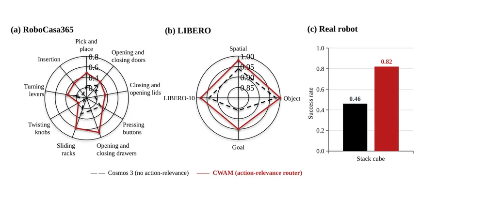
무슨 문제인가
WAM(world action model)은 관측에서 latent를 뽑아 다음 장면 예측과 행동 생성에 함께 씀. 장면 예측에는 식탁보나 뒤쪽 잡동사니까지 필요하지만, 블록 쌓기 행동을 정하는 것은 블록 위치와 gripper 상태뿐임. demonstration을 잘 맞춘다고 해서 action head가 행동의 원인 latent만 쓴다는 보장은 없음. 관측과 행동의 분포가 같아도 latent는 임의의 가역 변환만큼 달라질 수 있어서, 원인 변수와 nuisance 변수가 섞인 채로 학습될 수 있음. 기존 nonlinear ICA 식별 이론은 충분한 시간 의존성, domain label, 개입을 요구하는데 로봇 demonstration에서는 이런 조건이 성립하기 어려움.
어떻게 푸나
저자는 먼저 제약이 없으면 학습된 action mechanism이 행동 차원마다 참 원인과 같거나 더 많은 수의 latent에 의존함을 보임(Proposition 1). 즉 의존하는 latent 수의 하한만 보장됨. 여기에 latent에서 행동으로 가는 Jacobian의 0이 아닌 원소 개수가 참 mechanism보다 많지 않도록 제약하면, 의존 구조가 latent 순서 바꿈을 빼고 정확히 식별됨(Theorem 1). 이때 행동 생성에 쓰이는 latent 묶음(compact state)은 참 action-relevant latent만의 가역 함수가 됨(Theorem 2). 이 결과는 시간 의존성이나 개입 없이 한 시점의 관측과 행동 쌍만으로 성립하고, 원인 변수와 nuisance 변수가 통계적으로 상관돼 있어도 성립함. 구현인 CWAM(Causal WAM)은 Cosmos 3 Nano의 video와 action 공동 rectified-flow 학습을 그대로 두고, 생성기 뒤에 router 하나를 추가함. router는 각 action query가 task token과 노이즈 없는 현재 시각 token 중 무엇을 볼지 attention으로 고르고, 상위 32개 token에 attention이 몰리도록 하는 sparsity loss를 받음. 입력은 관측 영상과 언어 지시이고 출력은 미래 영상 latent와 행동 chunk이며, 기존의 dense 시각-행동 경로도 그대로 남겨 둠.
결과
- 합성 데이터(latent 20개 중 4개만 행동을 만듦)에서 sparsity를 건 CWAM이 고른 4개 좌표는 action-relevant latent를 linear probe R² 0.9957로 복원함. 고른 좌표가 nuisance를 참 원인 블록보다 더 잘 맞히는 정도(Δnuis)는 0.039로, 20차원 전체 readout의 0.646보다 낮음. 5개 seed 평균임.
- RoboCasa365(주방 시뮬레이션 조작 과제 모음)의 17개 과제에서 과제당 100 episode 평균 성공률이 0.24에서 0.43으로 오름. 비교 대상은 같은 데이터와 recipe로 post-training하되 router만 뺀 Cosmos 3임. 17개 중 13개 과제에서 올랐고, PickPlaceDrawerToCtr처럼 0.15에서 0.07로 내린 과제도 있음.
- CWAM 성공률이 가장 높은 4개 과제에서 action query에 routed token만 보여 주면 평균 성공률이 0.713에서 0.603으로 내림. 같은 개수의 무작위 token만 보여 주면 0.245로 내림.
- 실제 Franka 로봇의 큐브 쌓기 과제 1개에서 50회 시도 성공률이 Cosmos 3는 0.46, CWAM은 0.82임.
한계
Theorem은 행동이 sparse 경로만으로 만들어진다고 보지만, 실제 배포 policy는 dense 시각-행동 경로를 남겨 두므로 Theorem이 배포 모델에 그대로 적용되지는 않음. 비교 대상은 router만 뺀 Cosmos 3 하나이고, 실로봇 과제는 1개이며, LIBERO 결과는 그림으로만 제시되고 코드 공개 여부는 본문에서 확인 불가임. 합성 실험은 참 원인 개수 4를 알고 상위 4개 좌표를 고른 설정이고, 초록이 말하는 효율 개선은 성공률 외의 지표로 측정되지 않음.
누리랩 연구와의 연결
- world model 위에 행동의 원인 token만 고르는 경로를 붙인 사례로 counterfactual reasoning과 이어짐. routed token을 가리거나 바꾼 관측에서 행동이 어떻게 달라지는지 보면 failure diagnosis 도구로 쓸 수 있음.
- 배경 변화에 강한 VLA를 만들 때 데이터 증강 대신 action head 쪽 sparsity로 접근하는 비교 대상이 됨. 조작 물체와 목표에 attention이 가는지 확인하는 방식은 object-centric 표현 연구의 기준 실험으로 쓸 수 있음.
7
74점
EgoHSI3R: Online 4D Hand-Scene Interaction Reconstruction from Egocentric Video
3D Vision
relevance 8/10
ICLR 양식 (추정)
Computer Vision and Pattern Recognition (cs.CV)
egocentric 영상에서 카메라 움직임, scene pointmap, 양손 MANO(손 mesh를 관절 회전과 모양 계수로 나타내는 parametric 모델) 파라미터, 손 vertex별 접촉을 하나의 recurrent 네트워크로 프레임마다 함께 복원함. test-time optimization 없이 ARCTIC world 좌표 손 관절 오차를 가장 강한 baseline의 124.59mm에서 108.80mm로 낮춤.
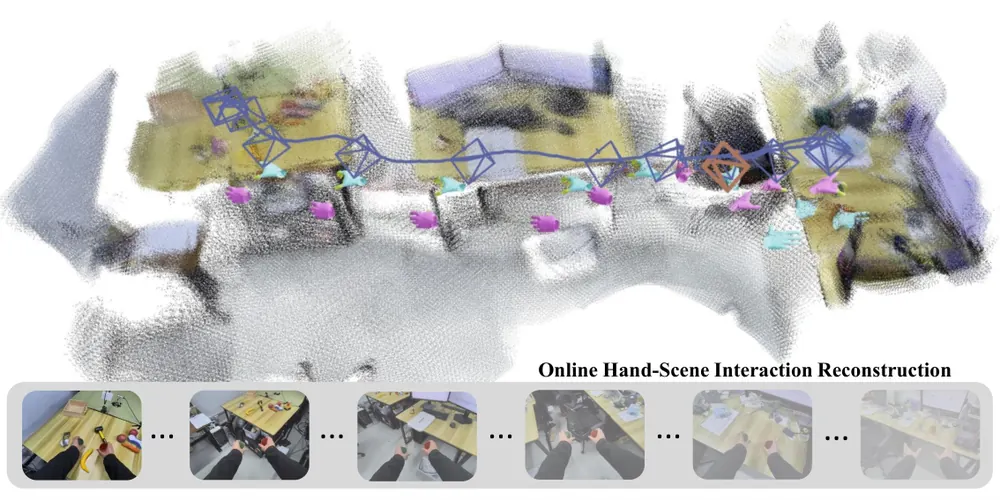
무슨 문제인가
사람의 egocentric 영상을 로봇 학습 데이터로 쓰려면 손이 world 좌표의 어디에 있고 주변 scene의 어디에 닿는지를 같은 3D 공간에서 알아야 함. 기존 손 복원은 카메라 좌표계에서 손 모양만 내거나, 카메라 움직임을 더해 world 좌표 손 궤적만 내고 scene은 복원하지 않음. 그래서 손과 scene을 따로 구한 뒤 좌표계, scale, 상대 위치를 sequence별 offline optimization으로 맞춰야 함. 따로 구한 결과는 깊이가 서로 어긋나 손이 떠 있거나 물체를 뚫기 쉽고, offline 처리는 프레임이 들어오는 대로 갱신해야 하는 로봇 교시에 쓰기 어려움.
어떻게 푸나
EgoHSI3R은 지금까지 들어온 프레임만 보고 프레임마다 한 번의 recurrent update로 카메라 pose, world 좌표 pointmap, 양손 MANO 파라미터, MANO vertex 778개의 접촉 확률을 출력함. 기반 모델은 streaming 3D 복원 모델 CUT3R이며, 그 persistent state가 지난 프레임의 geometry와 카메라 움직임을 쌓아 손과 scene이 공유하는 world 좌표와 scale을 제공함. Hand Prompt Builder는 사전학습된 손 복원 모델 WiLoR가 손 crop에서 뽑은 prior token 18개에 손 bounding box 주변의 scene feature를 gate로 섞어 손 prompt를 만듦. 이 손 prompt를 CUT3R의 카메라·scene token 뒤에 붙이면 decoder가 scene 및 과거 state와 attention으로 정보를 주고받고, MANO head가 손 파라미터를 냄. Contact Builder는 관절 token feature를 MANO skinning weight로 vertex 778개에 나눠 주고, 각 vertex query가 손 주변 scene feature에 cross-attention한 뒤 접촉 여부를 분류함. 이 vertex feature의 평균은 residual로 손 token에 다시 더해져 손 복원을 고침(contact feedback).
결과
- ARCTIC(양손으로 관절 있는 물체를 다루는 egocentric 데이터셋)의 150프레임 clip에서 W-MPJPE(정렬 없이 잰 world 좌표 관절 위치 오차)를 비교함. 이 방법은 108.80mm이고, 미래 프레임까지 쓰는 StableHand는 124.59mm, HaWoR는 171.61mm임. 반면 가속도 오차는 16.91 대 4.67m/s², 양손 상대 위치 오차는 120.77 대 93.71mm로 StableHand가 더 낮음.
- contact head가 있는 두 변형을 같은 학습 절차로 비교한 ablation에서, contact feedback을 켜면 ARCTIC W-MPJPE가 113.30mm에서 108.80mm로 내림. 같은 비교에서 접촉 F1은 ARCTIC 43.349에서 44.298로, DexYCB 47.657에서 48.197로 오름.
- MANO vertex 접촉 예측을 접촉 전용 모델 HACO와 비교함. ARCTIC precision은 52.152 대 43.609로 높지만, recall은 45.015 대 65.181, F1은 44.298 대 48.917로 낮음.
- H2O(egocentric 양손 조작 영상)의 depth Abs Rel은 0.027로, online 방법 TTT3R 0.045와 offline 방법 EgoMono4D 0.049보다 낮음. H200 GPU 1장에서 end-to-end 속도는 10.070 FPS로 HaWoR 7.756 FPS, HandFlow 7.645 FPS보다 빠름.
한계
평가는 학습에 쓴 6개 데이터셋의 recording 단위 test split에서만 했고, 로봇 실험이나 복원 결과로 policy를 학습한 실험은 없으며, 코드는 공개 준비 중이라고만 적힘. 접촉 label은 물체 표면에서 1cm 이내인 vertex를 접촉으로 정한 것이라 힘이나 실제 닿음을 잰 값이 아님. 손 검출 실패를 감점하는 카메라 좌표 평가에서는 ARCTIC MPJPE가 19.706mm로 ACE-Ego-Hand의 16.615mm보다 높고, jitter도 13.938 대 2.770(원문에 단위 표기 없음)으로 큼.
누리랩 연구와의 연결
- 사람 egocentric 영상에서 손 궤적, scene geometry, 접촉 vertex를 같은 world 좌표로 online 추출함. 그래서 dexterous manipulation용 human demonstration을 로봇 데이터로 바꾸는 파이프라인의 전처리 후보로 비교해 볼 수 있음.
- 손과 scene을 하나의 persistent state에 함께 쌓는 구조는 object-centric 4D 표현이나 robot memory에서 손과 물체의 접촉 이력을 state에 남기는 방식을 설계할 때 참고가 됨.
8
74점
Cross-Embodiment Motion Planning by Coupling Body-Agnostic World Model with Differentiable Ego-Dynamics
World Model
relevance 8/10
ICRA·IROS·RA-L 계열 양식 (추정)
Robotics (cs.RO)
로봇 몸체와 무관한 world model과 로봇별 미분 가능한 단순 동역학 모델을 카메라 이동량 하나로만 연결해, 로봇 7종에 함께 쓰는 local planning policy를 한 번에 학습함. 복잡한 장애물 benchmark에서 같은 world model 위 diffusion policy보다 평균 성공률을 75.5%에서 81.8%로 올림.
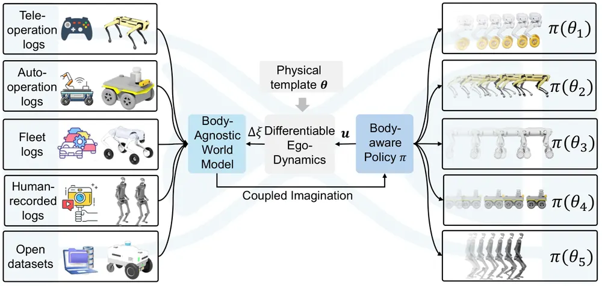
무슨 문제인가
장애물 사이 local motion planning은 로봇마다 다름. 몸 크기가 지나갈 수 있는 틈을 정하고, 동역학이 제때 실행할 수 있는 명령을 정하기 때문임. 기존 cross-embodiment policy는 정규화된 명령을 내고 실행을 저수준 제어기에 맡기거나, 로봇마다 따로 학습하거나 distillation함. world model 쪽도 명령을 조건으로 받으면 로봇마다 명령 라벨 데이터와 재학습이 필요하고, 자세 변화를 조건으로 받으면 명령이 실제 움직임으로 바뀌는 과정이 빠져 policy가 로봇 동역학을 모름.
어떻게 푸나
Hourglass는 평지에서는 로봇 몸체가 관측에 영향을 주는 통로가 카메라 ego-motion(카메라의 평면 위치·방향 변화량)뿐이라는 관찰에서 출발함. 그래서 관측 모델을 환경 쪽 world model과 로봇 쪽 ego-dynamics로 나누고, 둘을 ego-motion으로만 연결함. world model은 depth 영상, ego-motion, 카메라 장착 파라미터만 받는 recurrent state-space model임. 여기에 카메라 중심의 공간 memory를 둠. 명령이나 로봇 종류는 입력에 없으므로 여러 로봇과 카메라 장착 위치의 데이터를 한데 모아 학습할 수 있음. ego-dynamics는 모든 로봇에 같은 구조를 쓰는 단순한 동역학 template으로, 속도·가속 제한, 1차 지연, 보행 주파수, 몸체 크기 같은 물리 파라미터 θ를 가지며 몇 분간의 주행 기록에서 식별함. policy는 θ를 입력으로 받아 명령을 내고, 상상 rollout의 매 단계에서 template이 명령을 ego-motion으로 바꾸면 world model이 다음 latent state를 예측함. 충돌·진행·평활도 cost의 해석적 gradient가 template과 world model을 거쳐 policy로 흐르므로 같은 장면에서도 θ마다 다른 gradient가 생겨 policy가 몸체를 고려하게 됨. policy는 θ 조건부 MPPI(sampling 기반 model predictive path integral planner)의 행동을 imitation해 초기화한 뒤 이 상상 학습으로 다듬음.
결과
- Isaac Sim 실내 장면에서 바퀴형, 4족, 휴머노이드, 바퀴-다리형 등 5가지 이동 방식의 로봇 7종으로 평가함. 무작위 상자를 깐 처음 보는 배치 80개(B2)의 7종 평균 성공률은 81.8%로, 같은 world model latent에서 학습한 diffusion policy 75.5%, behavior cloning 71.2%보다 높음. 고정 배치(B1)에서는 88.2%로 각각 84.4%, 82.8%보다 높음.
- 초기화에 쓴 MPPI 교사는 매 단계 occupancy map과 수천 개 rollout을 쓰며 평균 성공률이 B2 83.2%, B1 91.0%임. Hourglass는 지도 없이 1.4~2.8퍼센트포인트 뒤처지는 수준이고, 계산 시간은 Hourglass가 GPU에서 18 ms이고, MPPI는 CPU rollout만 101 ms임.
- 로봇마다 따로 학습한 specialist 7개의 평균 성공률은 B2 81.9%, B1 88.4%로 generalist와 통계적으로 차이가 없음. θ 조건을 빼고 정규화 명령을 내게 하면 B2 성공률이 81.8%에서 72.6%로 내림.
- 학습에 없던 실제 skid-steer 로봇(AgileX Scout Mini)에 3분간 원격조종 주행으로 θ만 식별해 zero-shot 배치함. 처음 보는 실내 장면 4곳의 4회 주행에서 충돌이나 사람 개입 없이 모든 목표에 도달함.
한계
simulation 평가는 한 건물 장면 하나에서만 했고, world model 학습 데이터도 모두 합성 depth임. 학습 범위보다 몸이 긴 iw.hub 로봇(학습에 없던 바퀴형 로봇)에서는 충돌로 실패가 늘어 MPPI보다 낮았으므로, 전이는 학습에 포함된 몸체 크기 범위로 제한됨. 실로봇 결과는 속도를 0.25 m/s로 제한한 4회 주행뿐이고, 평지 가정이라 계단이나 험지에는 바로 쓸 수 없으며 코드 공개는 본문에서 확인 불가함.
누리랩 연구와의 연결
- world model에서 embodiment를 빼고 미분 가능한 동역학 template으로만 로봇 차이를 넣는 분해 방식임. 로봇 팔이 달라도 장면 world model을 공유하려는 cross-embodiment VLA 연구에서 설계 기준으로 쓸 수 있음.
- template 파라미터를 바꿔 상상 depth를 다시 만드는 실험(회전 속도 절반·두 배)은 world model 기반 counterfactual reasoning과 test-time planning의 예시로 참고할 수 있음.
9
72점
SACQ: Structure-Aware Codebook Quantization for Ultra-Low-Bit Vision-Language-Action Models
VLA
relevance 9/10
ICLR 양식 (추정)
Computer Vision and Pattern Recognition (cs.CV)
VLA 가중치를 4차원 벡터 codebook으로 압축하면서, 각 projection이 다음 연산에서 쓰이는 방식과 최종 action 오차를 기준으로 codebook과 bit 수를 정함. GR00T N1.7에서 언어·action 가중치당 1.5 bit로 LIBERO 평균 성공률 93.85%를 유지하고(BF16 94.10%) 메모리를 4.83배 줄임.
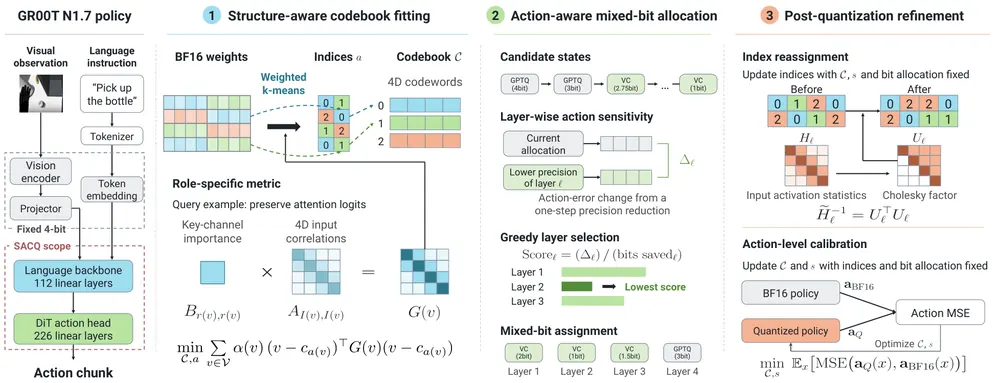
무슨 문제인가
LLM에서 가져온 post-training quantization(PTQ: 재학습 없이 소량의 calibration 데이터로 가중치를 압축하는 방법)은 VLA를 2 bit 이하로 줄이면 성공률이 크게 내려감. 기존 PTQ 방법인 GPTQ와 GPTVQ는 각 layer 출력의 재구성 오차만 줄이므로, 그 출력이 attention logit을 만드는지 FFN 비선형을 거치는지를 구분하지 않음. 같은 크기의 layer 오차라도 쓰이는 위치에 따라 최종 action에 주는 영향이 다름. bit 배분을 layer 단위 지표로 정하면 layer 출력에서는 둔해 보여도 action에는 크게 영향을 주는 layer를 놓침.
어떻게 푸나
SACQ(Structure-Aware Codebook Quantization)는 BF16 policy와 calibration 샘플을 받아, GR00T N1.7의 linear layer 338개를 layer마다 다른 bit로 압축한 policy를 내놓음. 가중치는 64개 단위 row-group scale로 정규화한 뒤 4개씩 묶어, layer별 codebook 하나의 index로 저장함. 첫 단계는 codebook을 weighted k-means로 맞추되 거리 척도를 projection의 역할에서 유도함. 예를 들어 query projection은 입력 Gram 행렬의 4×4 block에 key 채널 에너지를 곱한 행렬을 척도로 써서 attention logit 변화를 줄임. 둘째 단계는 모든 layer를 4 bit GPTQ에서 시작해, 한 단계 낮췄을 때 최종 action 상대 오차가 늘어나는 양을 모델을 실제로 돌려서 잼. 그 뒤 절약한 bit당 오차 증가가 가장 작은 layer부터 낮추고, language backbone과 action head 중 bit가 더 많은 쪽을 먼저 줄여 한쪽만 압축되지 않게 함. 셋째 단계(정제)는 second-order 오차 보상으로 codeword index를 다시 고르고, index를 고정한 채 codebook과 scale만 BF16 policy의 action과의 MSE로 학습함.
결과
- LIBERO(Spatial·Object·Goal·Long 4개 suite, suite당 500 episode인 시뮬레이션 조작 benchmark)에서 평균 성공률을 잼. 언어·action 가중치당 1.5 bit의 SACQ는 93.85%로 BF16의 94.10%보다 0.25퍼센트포인트 낮음. 같은 1.5 bit에서 AQLM은 87.50%, ActQuant는 30.05%임. 메모리는 5.677 GB에서 1.175 GB로 줄어듦.
- 1.25 bit에서 bit 배분과 정제는 그대로 두고 codebook 척도만 Euclidean으로 바꾸면 평균 성공률이 92.70%에서 87.65%로 내림. LIBERO-Long은 87.6%에서 73.2%로 내림. 1.5 bit에서 정제 전 성공률은 Euclidean이 0%, 역할별 척도가 47.50%이고, 정제 후 93.85%가 됨.
- SimplerEnv(실제 Google 로봇 과제를 시뮬레이션으로 재현한 평가)의 두 protocol인 Visual Matching(평가 조건 864개)과 Variant Aggregation(1,992개)에서 평균 성공률을 잼. 2 bit SACQ는 각각 63.76%(BF16 58.90%), 52.27%(BF16 53.45%)임. 가장 높은 baseline인 TWLA는 2.06 bit에서 각각 52.68%, 48.16%임.
- RTX 4090, batch 1, denoising 4 step 조건에서 1.5 bit 가중치에 INT8 activation을 함께 쓰면 추론 한 번이 21.28 ms에서 14.07 ms로 줄어듦(1.51배). 이때 LIBERO 평균 성공률은 93.55%임. activation을 BF16으로 두면 20.20 ms로 속도 이득은 거의 없음.
한계
모든 평가가 시뮬레이션이고, 실로봇 검증은 저자도 향후 과제로 남김. LIBERO에서는 suite별 checkpoint와 같은 suite의 학습 데이터 샘플로 calibration하므로, 배포 분포와 다른 데이터로 압축했을 때의 성능은 보이지 않음. calibration 데이터를 전부 쓰면 역할별 척도 없이도 1.5 bit에서 92.60%가 나와 이득이 1.25퍼센트포인트로 줄고, vision encoder는 4 bit 아래에서 민감해 압축 대상에서 뺌.
누리랩 연구와의 연결
- 로봇 탑재 GPU에 VLA를 올리는 경량화 도구로 쓸 수 있음. 특히 action MSE로 codebook과 scale만 보정하는 단계가 정확도 회복 대부분을 맡으므로(정제 전 47.50%, 정제 후 93.85%), 우리 VLA에 이 단계부터 재현해 볼 수 있음.
- 압축 정도를 layer별 action 오차로 고르는 방식은, test-time optimization처럼 policy를 여러 번 돌리는 방법의 추론 비용을 줄일 때 정확도 손실을 미리 재는 기준으로 쓸 수 있음.
10
72점
Nexus-VLA: Bridging Human and Robot Experiences via a Shared Hierarchical Semantic Latent Space
VLA
relevance 9/10
ICLR 양식 (추정)
Robotics (cs.RO)
짝이 맞지 않는 사람 egocentric 영상과 로봇 demonstration을 한 단계로 함께 학습하면서, 과제 의도부터 접촉까지 네 단계 의미를 latent 하나에 담아 action 생성에 바로 씀. RoboCasa-GR1 24개 과제 평균 성공률이 80.5%로, 비교 방법 중 가장 높은 ACE-Ego-0의 72.8%보다 높음.
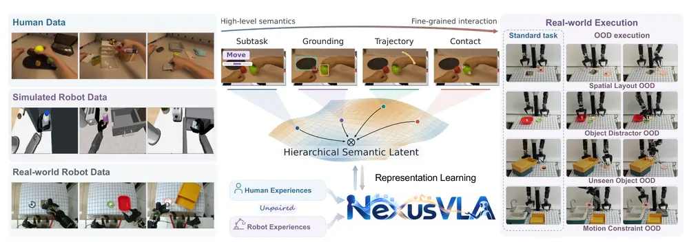
무슨 문제인가
사람 egocentric 영상은 로봇 demonstration보다 모으기 쉽지만, 겉모습과 관절 구조와 action 공간이 로봇과 달라 그대로 policy 학습에 쓰기 어려움. 기존 방법은 사람 영상으로 먼저 사전학습하고 로봇 데이터로 fine-tuning하는 다단계 방식이 많아, 사람 쪽 지식이 최종 policy에 간접적으로만 전달됨. 사람과 로봇의 대응도 과제 의도만 맞추거나 손과 end-effector 궤적만 맞추는 식으로 한 단계에서만 세움. affordance map이나 예측 궤적 같은 명시적 중간 표현을 쓰면 추론 때 계산과 지연이 늘고, 연속 action 생성에 바로 연결하기도 어려움.
어떻게 푸나
Nexus-VLA는 이미지와 지시문을 받는 vision-language backbone의 입력 끝에 학습 가능한 token 하나를 붙임. 이 token의 hidden state를 Hierarchical Semantic Latent(이하 semantic latent)로 씀. 학습 중에는 가벼운 projector 4개가 이 latent에서 하위 과제 설명(Intent), 조작 물체와 목표의 2D box(Spatial), 앞으로의 양손 손목 궤적(Motion), 앞으로의 접촉 위치와 상태(Interaction)를 각각 예측함. 이 정답 label은 Qwen3-VL, SAM 3, CoTracker3 등 고정된 모델로 오프라인에서 자동 생성함. flow matching action expert는 semantic latent를 포함한 hidden sequence에 cross-attention해서 action chunk를 출력하며, 추론 때 네 가지 의미는 따로 생성하지 않음. action 공간은 로봇 관절 29차원과 사람·로봇 공유 양손 손목 pose 18차원으로 나누며, 사람 데이터는 HaMeR(사람 영상에서 손 pose를 복원하는 모델)로 얻은 손목 pose 부분에만 loss를 줌.
결과
- RoboCasa-GR1(Fourier GR-1 휴머노이드로 하는 시뮬레이션 조작 과제 24개 모음)에서 24개 과제 평균 성공률이 80.5%임. 사람 데이터를 쓰는 ACE-Ego-0은 72.8%, GR00T-N1.6은 47.6%임. 학습에는 로봇 궤적 24,000개와 EgoDex 사람 영상 21,446개를 씀.
- ablation은 본 실험(200K step, 80.5%)보다 짧게 학습한 별도 설정에서 잼. baseline은 사람 데이터와 의미 감독 없이 로봇 데이터만으로 학습한 변형임. 로봇 데이터만 쓰고 같은 의미 감독을 줄 때, 네 단계를 따로 담은 latent는 76.9%이고 하나로 합친 latent는 78.3%임(120K step). 여기에 사람 데이터 공동학습을 더하면 80.2%임(180K step, 사람과 로봇 sampling 비율 1:2). 의미 감독 없이 사람 데이터만 섞으면 71.8%로, baseline 72.4%보다 낮음.
- 시뮬레이션 OOD 6개 설정의 평균 성공률이 로봇만 쓴 baseline 48.2%에서 68.9%로 오름(설정당 500 rollout). 로봇 데이터에는 없고 사람 영상에만 나온 물체 설정에서는 40.8%에서 69.4%로 오름.
- 실로봇 과제 6개에서 표준 설정과 OOD 4개 설정의 평균 성공률이 74.0%임(설정당 50 rollout). baseline은 52.0%, π0.5는 49.2%, GR00T-N1.6은 43.2%임. 사람 영상에만 있는 물체 6종으로 만든 실로봇 과제에서는 로봇만 쓴 baseline 47.0% 대비 72.7%임.
한계
ablation에서 로봇만 쓴 변형은 120K step, 사람 데이터를 쓴 변형은 180K step에서 평가해 학습 step 수가 다른 상태로 비교함. 실로봇 기종은 본문에서 확인 불가하고, 결과는 rollout 50회 성공률뿐이며 반복 학습에 따른 편차는 보고하지 않음. 사람 영상은 EgoDex의 pick-and-place 영상만 걸러 썼고, 코드 공개 언급은 없음.
누리랩 연구와의 연결
- 명시적 중간 표현을 추론 때 만들지 않고 의미 감독만 latent에 거는 방식이라, 누리랩 VLA 연구에서 사람 영상 공동학습을 넣을 때 비교 기준으로 쓸 수 있음.
- 학습 때만 쓰는 Motion과 Interaction projector를 추론 때도 켜 두면, 예측한 손목 궤적과 접촉을 실제 실행과 비교하는 failure detection 신호로 바꿔 볼 수 있음.
11
72점
SketchMate: Agentic Geometric Reasoning for Zero-Shot Precision Insertion
Manipulation
relevance 9/10
Robotics (cs.RO)
처음 보는 부품을 sub-millimetre 정밀도로 끼우려고, VLM은 무엇을 잴지만 정하고 치수와 회전은 기하 도구와, 잡은 뒤 가까이서 찍은 형상 맞춤이 구함. 방법 개발에 쓴 시뮬레이션 삽입 69회 중 61회(88%)를 조립 자세에 넣었고, 같은 VLM을 쓴 ReKep과 MOKA는 0회임.
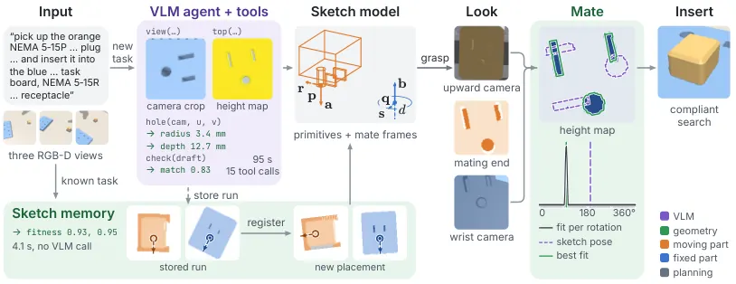
무슨 문제인가
플러그나 커넥터 삽입은 부품 간 틈이 0.1~0.3 mm이고 회전 허용 오차가 1~2도 정도라서, 새 부품마다 CAD 모델이나 과제별 학습 policy가 필요했음. VLM 기반 zero-shot 조작 방법(ReKep, MOKA, VoxPoser)은 부품의 의미는 알지만 keypoint·mark·voxel 같은 수 mm 단위 표현으로 공간을 다룸. 또한 플러그의 어느 점이 구멍의 어느 점과 맞는지 같은 3D 대응을 VLM이 이미지에서 직접 추론하게 함. 이 표현은 sub-millimetre 삽입에 필요한 정밀도보다 거칠어서, 같은 조건에 옮겨도 조립 자세에 이르지 못함.
어떻게 푸나
SketchMate는 과제를 sketch model로 표현함. sketch model은 움직이는 부품을 덮는 몇 개의 box·cylinder primitive와 두 개의 mate frame으로 이루어짐. mate frame은 부품 끝점, 삽입 축, 회전 기준 방향, 회전 대칭 차수와 고정 부품의 입구, 삽입 깊이를 담음. 입력은 자연어 지시와 세 대의 RGB-D 카메라 영상이고, VLM agent가 tool loop에서 hole, top(정사영 height map), fit, check 같은 기하 도구를 불러 sketch를 만듦. VLM은 어느 구멍을 쓸지와 무엇을 잴지를 정하고, 수치는 도구가 depth 점군에 원·평면·실린더를 맞춰 돌려줌. 부품을 잡은 뒤 로봇은 바닥의 위쪽 카메라로 부품 끝면 profile을 찍고, wrist camera로 고정 부품을 가까이서 찍어 height map을 만듦. 이어서 회전과 위치를 전수 탐색해, 벽에 닿으면서 파고들지 않는 자세를 고르는 shape complementarity 점수로 sketch를 고침(look-and-mate). 같은 과제가 다시 나오면 sketch memory가 저장된 부품 점군을 새 배치에 ICP로 정합해 sketch를 옮기고, 정합 fitness가 낮을 때만 VLM을 부름.
결과
- 개발용 69회(AutoMate 조립 42개, 규격대로 만든 커넥터 13개, NIST식 task board 10개, AI for Industry Challenge 부품 4개)로 평가함. strict kinematic test(조립 자세에서 2 mm, 5도 이내) 성공이 61회임. ReKep과 MOKA는 같은 GPT-6.1-Sol, planner, controller를 써도 0회이고, 최종 자세와 입구 사이 거리의 중앙값이 25 mm와 13 mm임.
- sketch만 쓰면 50회이고 look-and-mate를 더하면 잃는 것 없이 61회로 오름. ground-truth sketch를 쓴 Oracle은 64회임. 개발용, held-out, 재사용 배치를 합친 회전 키 부품 86회에서 sketch 회전이 허용 오차 안인 경우가 57회에서 look 뒤 83회로 오름.
- 개발 뒤에 만든 held-out 커넥터 6종 18회(USB-C, HDMI, XLR 등)에서 전체 방법은 strict와 physics test 모두 18회 성공함. physics test는 Isaac Lab에서 접촉 동역학까지 시뮬레이션해 최종 자세가 축에서 2 mm, 회전 5도 안이면 성공으로 셈. sketch만 쓰면 각각 6회와 10회임.
- 8개 과제의 새 배치 32회에서 저장된 agent 실행 1개를 재사용하면 strict 30회로, 매번 agent를 부르는 경우(30회)와 같음. sketch를 만드는 중앙값 시간은 약 90초에서 3.4초로 줄고, physics 성공은 memory 32회, agent 28회임.
한계
모든 실험은 Isaac Lab 시뮬레이션이고 noise 없는 depth를 씀. 실로봇 실험은 없으며, 실제 depth 센서에서 mm 단위 구멍이 흐려지는 문제는 다루지 않음. 바닥 위쪽 카메라와 wrist camera 두 대가 추가로 필요하고, 한 축 직선 삽입만 다루므로 나사 결합이나 다단계 조립은 범위 밖임. 본문에 코드 공개 언급은 없음.
누리랩 연구와의 연결
- VLM은 의미 판단만 하고 정밀 측정은 기하 도구에 맡기는 분업 구조는 VLA나 VLM agent 기반 manipulation에서 공간 정밀도 한계를 다룰 때 직접 비교 대상이 됨.
- 잡은 뒤 다시 보고 회전 오판을 고치는 look-and-mate는 active perception과 failure recovery의 구체적 사례이고, agent 실행을 저장해 정합으로 재사용하는 sketch memory는 robot memory 연구와 이어짐.
12
72점
TinyAstral: Transferring Self-Evolving Harnesses to Tiny Generalist Manipulation Agents
Embodied AI
relevance 8/10
RA-L (comments 표기)
Robotics (cs.RO)
큰 VLM planner를 고정한 채 그 주변의 tool·feedback·memory·recovery 코드(harness)를 LLM agent가 자동으로 고치게 하고, 개선된 harness 안에서 teacher 궤적을 4B 모델에 증류함. RoboTwin 50개 과제에서 teacher는 33.4%에서 63.6%로 오르고, 4B student는 62.8%에 이름.
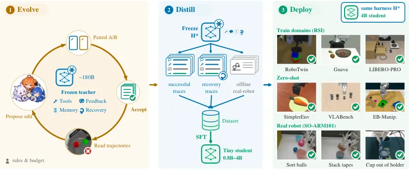
무슨 문제인가
VLM이 perception·motion tool을 호출해 로봇 팔을 다루는 agent는 모델만큼이나 harness의 품질에 성능이 좌우됨. harness는 tool interface, 실행 결과 feedback, 과제 memory, 실패 recovery 로직을 묶은 주변 코드를 말함. 기존 연구는 고정된 큰 모델 주변의 harness를 개선하거나, 강한 agent의 궤적을 작은 모델에 증류하는 두 갈래로 나뉘어 있었음. closed-loop 조작은 planner를 매 단계 다시 부르므로 큰 모델을 쓰면 추론 비용이 큼. 큰 teacher의 harness를 개선해 얻은 이득이 작은 모델로도 넘어가는지는 확인된 적이 없음.
어떻게 푸나
TinyAstral은 두 단계로 동작함. 1단계에서는 약 180B인 open-weight teacher(Qwen3.8-Flash-Next)의 가중치를 고정하고 harness만 고침. 여러 frontier LLM agent로 이루어진 master가 teacher의 궤적(이미지, tool call, 반환 결과, reasoning)을 읽고 실패를 10개 유형으로 분류한 뒤 harness 수정안을 작성함. 수정안은 같은 과제·seed 쌍에서 기존 harness와 paired A/B test를 거침. 사람이 미리 정한 통계 기준을 통과할 때만 채택됨. 이 1단계 전체를 RSI(recursive self-improvement)라 부름. 과제 이름으로 분기하는 코드는 금지되고, 평가 seed는 채택 시험에서 제외됨. 2단계에서는 최종 harness를 고정하고, teacher의 성공 궤적과 일부러 실패를 주입한 recovery 궤적을 모음. 여기에 공개 실로봇 데이터셋을 harness 형식으로 바꾼 보조 데이터를 더해 0.8B~4B student를 fine-tuning함. student의 입력은 카메라 이미지, 지시문, 최근 tool 결과, gripper 상태이고, 출력은 reasoning과 tool call 하나임. 배치할 때는 student가 같은 harness 안에서 teacher 자리를 대신함.
결과
- RoboTwin-50(양팔 조작 시뮬레이션 과제 50개, 500 episode)에서 harness 버전 4개마다 4B student를 따로 증류함. student 성공률은 36.2%, 49.8%, 60.0%, 62.8%로 오르고, 같은 버전의 teacher(33.4%, 49.4%, 60.4%, 63.6%)와 비슷함. 같은 harness의 미학습 4B 모델은 41.2%임.
- 같은 episode에서 TinyAstral-4B를, 같은 teacher 모델을 다른 연구의 harness에 넣은 경우와 비교함. Guava benchmark(같은 이름의 선행 연구가 낸 조작 과제 15개, 450 episode) 성공률은 TinyAstral-4B 93.6%, Guava harness의 teacher 78.9%임. LIBERO-PRO(perturbation을 넣은 LIBERO)는 78.3% 대 57.3%(MotorMind harness)와 53.0%(PyRUA-Lean harness)임.
- RSI와 학습에 쓰지 않은 SimplerEnv, VLABench, EB-Manipulation에서 4B student는 같은 harness의 552B DeepSeek-V4.1-Flash와 2.4퍼센트포인트 이내 차이를 보임. 예를 들어 VLABench 성공률은 41.2% 대 38.8%임.
- SimplerEnv 20개 episode의 배치 비용(accelerator 수와 episode 중앙 시간의 곱)은 student 25.3, teacher 123.8 accelerator·초임. 같은 episode에서 성공 수는 student 20회 중 14회, teacher 12회임.
한계
핵심 증거는 모두 시뮬레이션 benchmark이고, SO-ARM101 실로봇 과제는 사례 그림으로만 제시되어 성공률은 본문에서 확인 불가임. harness는 SAM 3 분할, grasp 계산, motion planning 같은 사람이 만든 모듈에 기대며, RSI 단계에는 frontier LLM agent와 큰 계산 예산이 필요함. 일부 경쟁 방법은 정지 규칙이나 성공 신호 제공 방식이 달라서 같은 조건의 비교가 아님.
누리랩 연구와의 연결
- failure 유형 분류와 recovery branch 주입으로 실패 대응 데이터를 만드는 절차는 failure detection·recovery 연구의 데이터 수집 방식으로 바로 가져다 쓸 수 있음.
- reasoning을 빼고 증류하면 LIBERO-PRO 성공률이 19.3퍼센트포인트 내려간다는 결과는, 작은 VLA나 tool 기반 planner에 language reasoning을 남길지 정할 때 근거가 됨.
13
70점
HandMimicX: Learning Human-Like Dexterous Manipulation via an Object-Centric Policy from Egocentric Videos
Manipulation
relevance 9/10
ICRA·IROS·RA-L 계열 양식 (추정)
Robotics (cs.RO)
사람 손 영상 하나에서 물체 형상과 첫 접촉 순간의 손 자세·접촉 부위만 뽑아, 물체를 임의 목표 자세로 옮기는 dexterous RL policy를 학습함. 시뮬레이션 8개 과제 평균 성공률이 85.4%로, object-centric baseline Dex4D의 66.8%보다 높음.
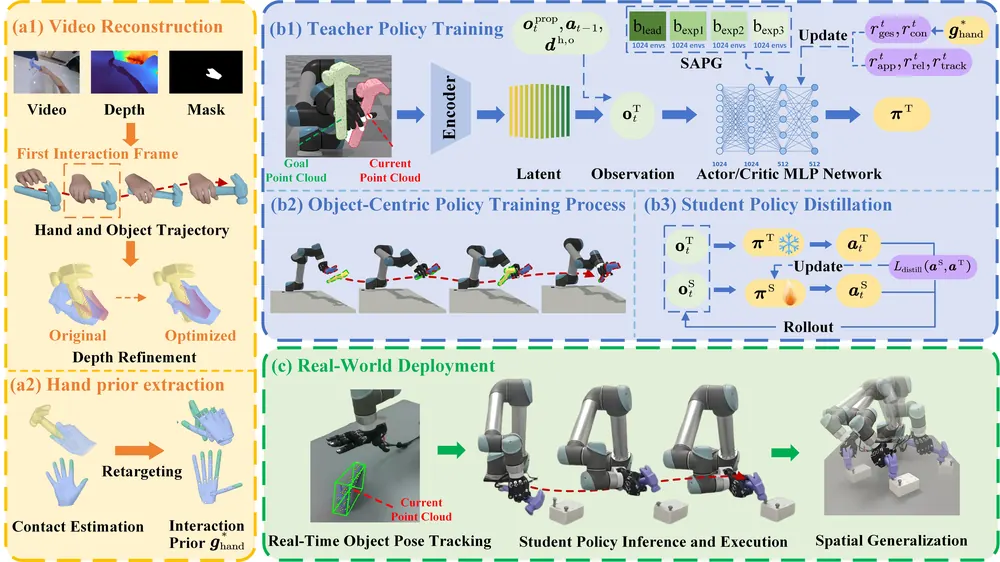
무슨 문제인가
사람 영상으로 dexterous hand를 가르치는 기존 RL 방법은 대부분 복원된 손 궤적을 reference로 두고 residual action을 학습함. 이 방식은 손과 물체 궤적 복원이 조금만 어긋나도 성능이 흔들리고, 시연과 다른 물체 위치에서는 궤적을 그대로 따라 할 수 없음. 반대로 물체 자세만 목표로 두는 object-centric policy(SimToolReal, Dex4D)는 위치 일반화는 쉽지만, 사람이 하지 않는 손가락 자세나 물리적으로 어색한 접촉을 만듦. 영상 하나에서 위치가 바뀌어도 통하는 skill을 얻으면서 손 모양도 사람처럼 유지하는 방법이 필요함.
어떻게 푸나
HandMimicX는 egocentric RGB-D 영상 하나를 입력으로 받아 물체 mesh와 interaction prior를 뽑음. 물체 mesh는 SAM3D, world 좌표의 손 자세는 HaWoR, 손의 접촉 부위는 HACO로 복원함. 카메라가 움직여 생기는 손과 물체의 어긋남은 손 영역의 depth point에 보이는 MANO(사람 손 parametric mesh 모델) 정점을 Huber loss로 맞춰 손 위치를 다시 잡아 줄임. interaction prior는 첫 접촉 순간의 손 자세, 손과 물체의 상대 자세, 영역 단위 접촉 부위로 이루어지며 Wuji hand(관절 20개인 로봇 손)로 retargeting됨. policy는 현재와 목표 물체 point cloud(각 128점)를 PointNet과 양방향 cross-attention으로 묶은 latent, 관절 상태, 이전 action, 손끝과 물체 거리를 받음. 출력은 UR5 팔 관절 6개와 손 관절 20개를 합친 26차원 action임. reward는 물체 목표 도달에 더해 prior와의 접촉 부위, 상대 자세, 손가락 자세 차이를 반영하며, 3200개 넘는 물체로 pretraining한 뒤 과제마다 finetuning함. 실로봇에서는 DAgger로 privileged 정보 없는 student policy를 distillation하고, FoundationPose로 물체 자세를 추적해 입력으로 씀.
결과
- 시뮬레이션 8개 과제(망치질, 우산 걸기, 쓰레기 쓸기, 분무기 세우기 등)에서 무작위 waypoint 5개를 모두 지나야 성공으로 셈. 4,096개 환경 평균 성공률이 HandMimicX 85.4%, Dex4D 66.8%, SimToolReal 57.3%이며 8개 과제 모두에서 가장 높음. baseline에도 과제별 finetuning 단계를 붙여 저자 설정으로 다시 돌린 결과임.
- 손 자세 prior를 빼면 평균 성공률이 85.4%에서 75.1%로 10.3퍼센트포인트 내려감. point correspondence 모듈을 빼면 78.3%, pretraining을 빼면 73.3%로 내려감.
- 실제 UR5와 Wuji hand에서 과제마다 시연 궤적을 affine 변환한 서로 다른 궤적 10개를 실행함. 80회 중 57회 성공해 평균 71.3%이고, 과제별로 6/10에서 8/10 사이임. 실로봇에서는 baseline 비교가 없음.
한계
손 자세가 사람처럼 자연스럽다는 주장은 그림 비교(Fig. 5)로만 보였고 정량 지표는 본문에서 확인 불가함. '영상 하나'로 배운다고 하지만 3200개 넘는 물체로 한 pretraining에 기대며, 복원된 형상·손 자세·접촉 추정의 오차는 그대로 policy 학습에 들어감. 접촉은 영역 단위 이진 상태뿐이고 힘은 다루지 않으며, 다른 embodiment와 양손 과제는 평가하지 않음.
누리랩 연구와의 연결
- 사람 영상에서 접촉 부위와 손 자세를 prior로 뽑아 object-centric 목표와 함께 reward로 쓰는 구성은 dexterous manipulation과 object-centric 3D 표현 연구에서 비교 대상이 됨.
- 현재와 목표 물체 point cloud의 대응을 cross-attention으로 묶는 encoder는 object-centric 3DGS나 keypoint 기반 목표 표현을 policy 입력으로 쓸 때 참고할 수 있음.
14
68점
From Teleoperation to Long-Horizon Dexterity: Evaluating Visuomotor Skills and Offline Proxies for Dexterous Manipulation
Manipulation
relevance 9/10
CoRL 2026 채택
Robotics (cs.RO)
다섯 손가락 로봇 손으로 RJ45 커넥터를 뽑아 꽂는 과제에서 imitation learning policy 281개를 실로봇 약 1,700회로 평가함. 관측·행동 표현 하나만 바꿔 성공률이 70~100퍼센트포인트 오른 경우가 여럿임을 보임.
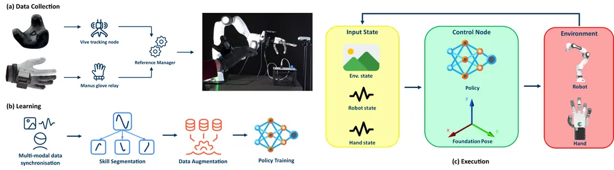
무슨 문제인가
imitation learning policy를 실제 로봇에 올렸을 때 어떤 설계 선택이 성공을 결정하는지 미리 알기 어려움. validation loss 같은 offline 신호는 실로봇 성공률과 약하게 상관되거나 상관이 없어서, 관측·행동 표현, encoder pretraining, sampler, optimizer 선택을 결국 비싼 실로봇 시험으로 정하게 됨. 이런 선택을 체계적으로 비교한 연구는 주로 시뮬레이션이나 parallel-jaw gripper에 머물러 있고, 다지 손의 contact-rich 과제에서는 근거가 드묾. RJ45 커넥터 삽입은 휘는 케이블 끝을 밀리미터 정밀도로 꽂아야 해서 고정 궤적으로도 end-to-end policy로도 어려운 과제임.
어떻게 푸나
저자들은 한 번의 시도를 네 단계로 나눔: 알려진 자세로 가는 고전적 motion 2개와, 지그에서 커넥터를 잡아 뽑는 grasp skill, 목표 소켓에 꽂는 insert skill임. 하드웨어는 Franka Research 3 팔과 Tesollo DG5F 다섯 손가락 손이고, Vive tracker와 Manus glove로 원격 조작해 30 Hz demonstration을 모으며 policy는 10 Hz로 실행함. 각 policy는 손목 RGB-D 카메라의 RGB 영상(두 시점 변형은 고정 3인칭 카메라 영상 추가)이나 depth에서 만든 2048점 point cloud와 로봇 상태를 받아, 손끝 위치·자세와 손가락 관절 명령으로 된 action chunk를 출력함. 비교한 family는 Diffusion Policy(DP), DP3, iDP3, flow matching, ACT, π0.5(LoRA fine-tuning), equivariant diffusion policy의 7개임. DP3는 point cloud를 작은 PointNet으로 encode하는 diffusion policy이고, iDP3는 여러 단계 point encoder를 쓰는 변형임. 두 policy의 학습 설정을 항목별로 대조해 한 항목만 다른 쌍(isolated)과 여러 항목이 다른 쌍을 구분하고, 성공률 차이는 Fisher exact test로 검정함. offline 평가는 각 checkpoint를 학습에서 빼 둔 validation episode에 돌려 예측 action chunk로 67개 지표를 계산하고, 다중검정 보정을 통과하며 policy 하나를 빼도 부호가 유지되는 상관만 신뢰할 만하다고 봄.
결과
- 한 항목만 바꾼 비교에서 표현 선택의 효과가 크게 나타남. iDP3에서 ROI crop(손이 작업하는 영역의 3D 상자 안 점만 남기는 처리)을 넣자 grasp skill의 pick 성공률이 0%에서 100%로 오름. DP3에서 PointNet의 모든 hidden layer 뒤에 LayerNorm을 넣자 insert 성공률이 0%에서 70%로 오름. point cloud를 카메라 좌표계 대신 로봇 base 좌표계로 쓰자 pick 성공률이 20%에서 100%로 오름.
- 두 시점 π0.5에서 상대 action 대신 절대 action을 예측하게 하자, 6D 회전 표현일 때 insert 성공률이 30%에서 100%로 오름(Fisher p = 0.003). Euler 각 표현일 때는 89%에서 100%로 올라 유의하지 않음(p = 0.474).
- 가장 좋은 iDP3(ROI crop) pipeline은 두 지그 모두에서 매 시도 삽입에 성공했고, 추론 GPU memory는 1.0 GB로 π0.5의 8 GB보다 작음. grasp와 insert를 한 policy로 학습한 경우는 모두 삽입 성공률이 10% 이하였음.
- 67개 offline 지표 중 신뢰할 만한 상관은 두 지그에서 시험한 iDP3 insert checkpoint 21개 안에서만 나옴. 예측 손끝 경로의 속도, 길이, 직선 대비 길이 비, jerk, spectral power 5개가 insert 성공률과 r = -0.70 ~ -0.80로 상관됨. 같은 checkpoint들에서 validation loss의 상관은 r = +0.08(p = 0.72)이었고, RGB와 point cloud policy를 섞은 그룹과 pick 성공률에서는 신뢰할 만한 지표가 없었음.
한계
과제는 RJ45 삽입 하나이고 시험 시작 위치는 지그 2곳뿐이며, 세션당 10회 시도에 실패가 뚜렷한 설정은 2~3회에서 중단해 비교마다 표본이 작음. 가장 큰 향상은 두 시점, recovery demonstration, skill 분해를 함께 바꾼 경우에서 나와 각 요소의 기여는 분리되지 않음. 최고 성능의 iDP3 pipeline도 틈이 더 좁은 소켓에서는 케이블을 가운데 지그에 둔 5회 중 2회, 왼쪽 지그에 둔 5회 중 0회만 삽입에 성공함. 본문에 코드 공개 언급은 없음.
누리랩 연구와의 연결
- dexterous manipulation policy를 실로봇에 올릴 때 점검할 표현 선택 목록(ROI crop, 로봇 base 좌표계, encoder 내부 normalization, 6D 회전의 절대 action)으로 쓸 수 있음. 학습 설정을 항목별로 대조해 Fisher test로 비교하는 ablation 절차도 그대로 가져다 쓸 수 있음.
- 예측 경로의 매끄러움이 같은 family 안에서 삽입 성공과 상관된다는 결과는, 배포 전 checkpoint 선별이나 실행 중 failure detection 신호를 설계할 때 출발점이 됨. family를 넘으면 상관이 사라진다는 점도 함께 고려해야 함.
15
64점
FOCUS: First-Order Control Using Optimal Transport Supervision for Imitation from Observations
RL
relevance 7/10
NeurIPS 2026 채택
Machine Learning (cs.LG)
행동 없이 상태만 있는 시연을 따라 할 때, 짧은 rollout 구간을 시연의 여러 조각과 optimal transport로 맞춘 비용을 미분 가능한 simulator로 직접 역전파해 policy를 학습함. 근육 152개로 움직이는 SNU Humanoid에서 시연자 대비 정규화 return이 0.894~0.912에 이름.
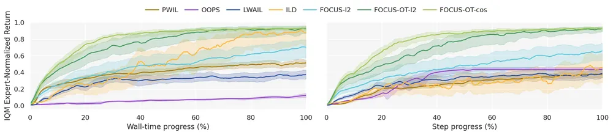
무슨 문제인가
imitation learning from observations(ILfO)는 전문가 행동 없이 상태 궤적만 보고 따라 해야 하며, 학습자와 시연의 시간 대응도 주어지지 않음. optimal transport(OT)로 두 궤적을 비교하는 기존 방법은 시간 대응 없이도 비용을 계산하지만, 그 비용을 reward로 바꿔 SAC·PPO 같은 zeroth-order RL로 학습하므로 표본 효율이 낮음. 미분 가능한 simulator로 policy gradient를 직접 얻는 방법도 있으나, 접촉이 많은 긴 궤적 전체를 미분하면 gradient가 불안정해짐. 기존 미분 가능 모방 방법은 behavior cloning 사전학습이나 시연과 맞춘 초기 상태, teacher forcing에 기대고 있었음.
어떻게 푸나
FOCUS(First-Order Control Using Optimal Transport Supervision)는 현재 policy로 H step의 짧은 rollout을 만들고, 이를 시연 궤적에서 무작위로 뽑은 길이 L의 조각 K개(기본 K=8)와 각각 비교함. 비교 단위는 연속 상태 쌍(state transition)이며, 조각마다 Sinkhorn 알고리즘으로 entropy 정규화 OT 계획을 구하고 이로부터 step별 비용을 얻음. 조각 K개의 비용은 softmin 가중치(temperature 0.5)로 합치며, 이를 soft best-of-K라 부름. 그래서 위상이 어긋나거나 닿을 수 없는 조각보다 지금 rollout과 잘 맞는 조각의 비용이 더 크게 반영됨. 합친 step별 비용 c는 변형에 따라 exp(-c)나 -log(1-e^-c) 같은 단조 변환을 거쳐 reward가 됨. 이 reward와 rollout 끝 상태의 학습된 critic 값을 더한 short-horizon 목적함수를 Sinkhorn 반복, OT 비용, simulator dynamics 전체를 거쳐 미분해 policy를 갱신함. 주 실험의 actor-critic 골격은 SAPO임. SHAC은 짧은 rollout 구간만 미분하고 끝 상태 값은 critic으로 보완하는 first-order 방법이고, SAPO는 여기에 maximum-entropy를 더함. 입력은 입력은 상태만 있는 시연 8개, 출력은 행동 policy임.
결과
- OT 변형은 거리(ℓ2, cosine)와 reward 변환을 함께 바꾼 FOCUS-OT-L2와 FOCUS-OT-Cos 두 가지이며, 수치를 범위로 적은 것은 이 둘의 값임.
- DFlex(미분 가능 물리 simulator)의 보행 과제 4개(Hopper, Ant, Humanoid, SNU Humanoid)에서, 본문 기준 FOCUS의 OT 변형 하나가 최종 상호작용 예산에서 모든 과제의 평균 return 1위임. OOPS, LWAIL, PWIL 같은 OT 기반 방법과 GAIfO, OPOLO 같은 adversarial 방법, 미분 가능 모방 방법 ILD와 비교함. 기준선별 최종 수치표(Appendix C)는 제공된 본문에서 확인 불가임.
- 같은 OT reward를 미분 없이 SAC·PPO로 학습한 변형과 같은 상호작용 예산에서 비교함. 시연자 대비 정규화 return이 Humanoid에서 0.816~0.934 대 0.045~0.243, SNU Humanoid에서 0.894~0.912 대 0.010~0.118임. OT 변형 비교 16개 모두에서 bootstrap 95% 구간이 겹치지 않음.
- OT 대신 지역 ℓ2 거리로 맞춘 FOCUS-L2는 Ant에서 0.459, SNU Humanoid에서 0.582에 그침. OT 변형은 같은 과제에서 각각 0.818~0.899, 0.894~0.912임(seed 6개 평균).
- 반 보행 주기만큼 어긋난 조각 하나에 무작위 조각 7개를 더하면(K=8), 최소 OT 비용 선택이 위상이 맞는 조각으로 바뀌는 비율이 4개 과제에서 46.3~72.0%임. 평균 위상 오차는 K=1 대비 3.31~5.02배 줄어듦.
한계
검증은 DFlex 시뮬레이션의 주기적 보행 과제 4개뿐이며, manipulation, 비주기 과제, 실로봇 이전은 다루지 않음. 미분 가능한 simulator를 안다고 가정하므로 학습된 world model로 바꿀 때의 오차는 확인되지 않았고, 골격을 SHAC로 바꾸면 Humanoid에서 return이 크게 낮아지는 경우가 있음. best-of-K 정합은 지역적이라 시연의 단계를 순서대로 모두 따르는지는 보장하지 않으며, 코드 공개 주소는 본문에서 확인 불가임.
누리랩 연구와의 연결
- 상태만 있는 시연에서 시간 대응 없이 dense reward를 만들고 dynamics 미분으로 학습하는 구조라, 사람 영상이나 다른 형태 로봇의 시연으로 manipulation policy를 배우는 IL 연구에서 reward 설계 비교 대상이 됨.
- simulator 대신 학습된 world model을 미분하는 확장은 저자가 남긴 과제로, world model 기반 test-time optimization 연구와 바로 이어짐.
오늘의 흐름
- 성공률 밖에서 실패를 재는 평가: VLA나 imitation policy를 성공률 하나로 재면 보이지 않는 실패를 따로 세는 논문이 여럿 나옴. 지시가 없을 때도 움직이는 행동, simulator 오류로 생긴 실패, 표현 선택만으로 달라지는 실로봇 성공률을 각각 측정함. VLA Policies Do Not Know When Not to Act, When the Simulator Fails, Not the Policy, From Teleoperation to Long-Horizon Dexterity
- 가중치를 고정하고 입력이나 주변 코드를 고치는 적응: 학습된 모델은 그대로 두고 task cost가 줄도록 입력 noise를 고치거나, VLM planner 주변의 tool·recovery 코드를 agent가 고쳐 성능을 올림. OneSteer, TinyAstral
- 사람 손 데이터를 로봇 action으로 옮기는 표현: 사람 시연을 로봇 손으로 옮길 때 관절 대신 접촉면 궤적, 첫 접촉 자세, 과제 의도부터 접촉까지 네 단계 의미를 담은 latent 같은 중간 표현을 씀. 사람 영상에서 손·scene·접촉을 함께 복원하는 전처리도 나옴. Contact Imitation Interface, HandMimicX, Nexus-VLA, EgoHSI3R
- world model의 구조를 나눠 쓰기: world model에서 행동의 원인이 되는 latent만 고르거나, 로봇 몸체와 무관한 부분과 로봇별 동역학을 나눠 여러 로봇이 같은 world model을 씀. CausalWAM, Cross-Embodiment Motion Planning
- VLM은 판단만, 실행은 코드와 도구로: VLM이 로봇 저수준 API를 부르는 코드를 쓰도록 RL로 학습하거나, 무엇을 잴지만 정하고 정밀 측정은 기하 도구에 맡김. CaPtain, SketchMate
해볼 만한 연구
행동 원인 token으로 VLA의 지시 무시 행동 감지
- 질문: VLA가 지시와 상관없이 장면만 보고 과제를 실행할 때, 행동을 만든 latent가 지시 token에 기대는지 장면 token에 기대는지로 이를 감지할 수 있는지 밝힘.
- 첫 실험: LIBERO-Goal(한 부엌 장면에서 지시만 바꿔 과제 10개를 시키는 시뮬레이션 모음)에서 원래 지시와 빈 지시 episode를 짝지음. 행동 예측에 쓸 token만 고르는 CausalWAM 방식의 sparse routing에서, 고른 token 중 언어 token 비율을 두 episode 사이에 비교함. 이 비율로 지시하지 않은 과제 완료를 얼마나 미리 거르는지 잼.
- 가장 가까운 연구: VLA Policies Do Not Know When Not to Act는 action chunk 차이로 행동을 시작할지 정함. CausalWAM은 행동 원인 latent를 고르는 데 sparsity를 쓰지만 실패 감지에는 쓰지 않음. 이 연구는 원인 token 구조를 failure detection 신호로 씀.
생성 policy의 noise 퍼짐으로 조작 실패 예측
- 질문: diffusion·flow 기반 manipulation policy에서 같은 관측에 noise만 바꿔 뽑은 action plan의 퍼짐이 실행 실패를 미리 알려 주는지 밝힘.
- 첫 실험: 실로봇 삽입 과제에서 plan 퍼짐과 예측 경로 매끄러움을 각각 실패 예측 점수로 써서 AUROC를 비교함. 퍼짐이 큰 step에서 noise를 cost gradient로 고치면 성공률이 오르는지도 잼.
- 가장 가까운 연구: OneSteer는 휴머노이드 tracking에서 noise 최적화를 썼고, From Teleoperation to Long-Horizon Dexterity는 경로 매끄러움과 성공의 상관만 보임. 이 연구는 둘을 manipulation의 test-time 감지·수정으로 묶음.
simulator 실패를 걸러 낸 failure recovery 학습
- 질문: 시뮬레이션 실패 rollout에서 physics artifact로 생긴 실패를 빼고 학습하면 recovery policy의 실로봇 성능이 달라지는지 밝힘.
- 첫 실험: RoboTwin(양팔 로봇 조작 시뮬레이션 benchmark)의 container 과제(물체를 용기에 넣는 과제)를 씀. physics 오류 검사 도구 SimuGuard로 거른 실패 데이터와 거르지 않은 실패 데이터로 각각 실패 상황용 recovery 동작(recovery branch)을 증류함. 두 경우의 시뮬레이션과 실로봇 성공률을 비교함.
- 가장 가까운 연구: TinyAstral은 실패를 10개 유형으로 나눠 recovery를 넣지만 simulator 실패를 가르지 않음. When the Simulator Fails, Not the Policy는 simulator가 만든 실패를 찾아내기만 하고 학습에는 쓰지 않음.
꼭 읽을 논문
- When the Simulator Fails, Not the Policy: 시뮬레이션 benchmark 수치를 비교하기 전에 physics engine이 만든 실패를 확인하는 도구와 절차를 줌.
- OneSteer: 고정된 생성 policy의 입력 noise를 50 Hz 안에서 task cost로 고치는 test-time optimization 사례임.
- Contact Imitation Interface: 사람과 로봇 손에 같은 손끝 모듈을 달아 접촉면 궤적을 공통 action으로 씀. 실로봇 손 2종의 6개 손-과제 조합 평균 최종 성공률을 기존 방식의 30.8%에서 80.8%로 올림.
- VLA Policies Do Not Know When Not to Act: 지시 없이도 움직이는 VLA 행동을 네 범주로 재는 평가 방법과 코드를 공개함.
- CausalWAM: 미래 장면과 행동을 함께 예측하는 world action model에서 행동 원인 latent를 식별하는 이론과 구현을 함께 보임.